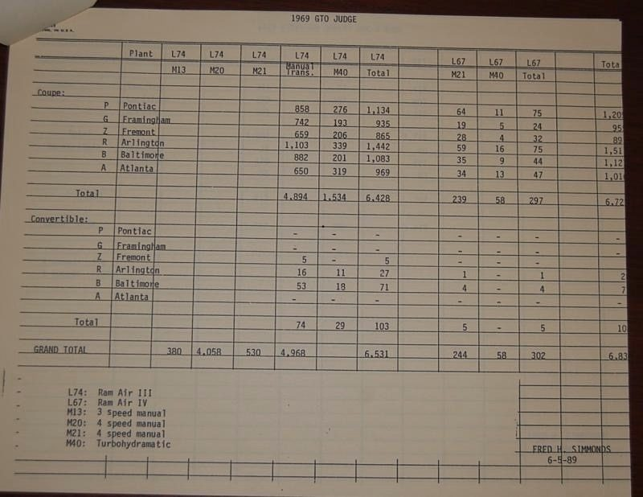

This research follows the Research Standards & Evidence Policy v1.0, issued Oct 14, 2026: evidence before consensus, facts before conclusions, context before excerpts, correction before defensiveness.
Source tiers
| Tier 1 | Primary: factory invoices, broadcast sheets, body and trim tags, dated Pontiac bulletins and memos, dealer orders, shipping records. |
| Tier 2 | Traceable copies: PHS invoice copies, complete scans and archival reproductions of identifiable originals. |
| Tier 3 | Corroborative: period press and published articles. |
| Tier 4 | Leads only: forums, auction listings, registries, social media, OCR and AI output. |
Claim labels
- Documented fact shown directly by an identified source.
- Corroborated interpretation explains several sources without contradicting them.
- Hypothesis a testable possibility.
- Unresolved missing, ambiguous or conflicting evidence.
Main sources used
- Pontiac Car Distribution Bulletins 69-21, 69-48, 58 and 69-74 Tier 2 copies
- PMD press releases of Oct 31 and Dec 19, 1968 and Jan 14, 1969 Tier 2
- T. C. Goad memo, May 8, 1969 Tier 2
- Kansas City Zone message ZCD 13-9, Feb 20, 1969 Tier 2
- PHS invoice copies and broadcast sheet for the Framingham DON 00017 car Tier 2
- Boston Herald Traveler, Feb 2, 1969 Tier 3
- Hot Rod, Dec 1968; Rocky Rotella, “Here Comes the Judge,” 2014 Tier 3
- Fred H. Simmonds, “1969 GTO JUDGE” production-by-plant table, signed 6-5-89 plant totals only, see the section below Tier 3
- Judge Registry pattern-car table Tier 4, leads only
Fred Simmonds’s 1989 Judge production table
In June 1989, Fred H. Simmonds typed a plant-by-plant count of 1969 GTO Judges by engine and transmission. The sheet is signed FRED H. SIMMONDS / 6-5-89. It is a later compilation; the page itself does not name the factory records behind the numbers. Tier 3, a cited later source. Provenance of the held photograph is not stated on the sheet.

What the Framingham, plant G, coupe row and the national coupe totals print:
| Plant | L74 Manual | L74 M40 | L74 Total | L67 M21 | L67 M40 | L67 Total |
|---|---|---|---|---|---|---|
| G Framingham | 742 | 193 | 935 | 19 | 5 | 24 |
| Coupe total, all plants | 4,894 | 1,534 | 6,428 | 239 | 58 | 297 |
Legend on the sheet: L74 = Ram Air III; L67 = Ram Air IV; M40 = Turbohydramatic. Framingham shows dashes across the Convertible rows, so there are no Judge convertibles at that plant on this table. The Grand Total far-right figure is cut off as 6,83?; readable cells sum to 6,833 by arithmetic alone.
- Documented fact On this table, Framingham built 193 L74 automatic M40 Judge hardtops, 5 L67 automatic hardtops, 935 L74 hardtops and 24 L67 hardtops, and no Judge convertibles.
- Documented fact From the papers of 242379G125205 itself, Tier 2, not from this table: the Framingham DON 00017 car’s PHS invoice lists TURB/HYDR, code 351, and its engine pad reads YZ, Ram Air III for automatic. That places the car among the 193 Framingham L74 automatic hardtops counted here.
- Corroborated interpretation Car 242379G125205, DON 00017, cowl 01B, shipped 01/30/69, falls at the early end of the Framingham Judge run. No document we hold shows an earlier Framingham Judge.
- Hypothesis: that it was the first Framingham Judge, or the first Framingham automatic Judge. That needs a build-order record. This table gives plant totals only, not build order.
Research history: Mike Noun’s 2015 forum reports
Documented fact about the forum statements only; Tier 4 lead for the underlying factory records. In “Early Production Judge ?????” on September 21, 2015, MikeNoun wrote:
Recently I found some internal documents at the Pontiac Museum, and asked Tim Dye if it was ok to discuss here. Internal memos show they produced 1000 pattern cars in Carousel Red.
On September 22, 2015, page 2, he wrote:
I cleared this with Tim, and he said this one was ok to post. There is a lot more information to follow, and will be released as it becomes available. Mike
These statements document Noun’s reported discovery and permission to post; they do not establish ownership, copyright, restricted research access, concealment, or anyone’s motive. The forum attachment image was not independently reverified for this addition. A later participant described a memo as written on May 8; that identification remains a forum lead, not independent verification of the attachment. These posts do not identify the missing June 12 or June 24 records, a VIN, a nationwide first Judge, or a specific plant/zone assignment.
December 19, 1968 release: limits of the copy
The held photograph of the “HERE IT COMES” release visibly carries a December 19, 1968 release date and an Examiner Reference Library receipt stamp dated December 24, 1968. It is already reproduced in the timeline; no new image or independent source is being claimed. Its acquisition source and chain of custody remain Unresolved. It must not be represented as an authenticated original or confidently attributed to Mike Noun. Its contents can be checked against this copy, while its provenance still requires verification.

Still missing
- Any primary page naming a VIN with the 1,000-pattern-car statement.
- Automotive News items, Dec 1968–May 1969.
- Ownership records for the lead unit, 1969–2003.